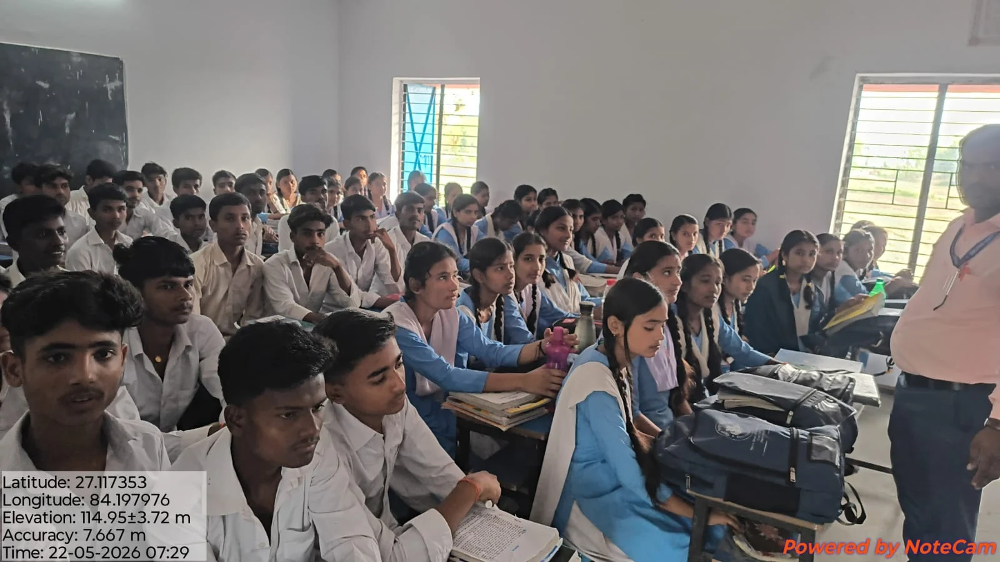

Class 9
A new foundation
123students enrolled
Bhaisahi, West Champaran
ज्ञान से उज्ज्वल भविष्य की ओर।
A place to learn, grow, and find your own path. Welcoming young minds from Bhaisahi and our surrounding community.

01 / Our school
Government Upgraded Higher Secondary School, Bhaisahi is a co-educational government school serving the rural community of Bagaha-I, West Champaran.
Managed by the Department of Education, the school provides education from Class 9 to Class 12, with Hindi as the medium of instruction. English, Hindi, and Sanskrit are taught as language subjects.
View the complete school profile02 / Academics
From secondary school to higher secondary,
one connected journey of learning.
A new foundation
Building confidence
Exploring possibilities
Ready for what comes next
03 / Student achievements
Celebrating the students featured in our
2026 Bihar School Examination Board results.
Class 10 · Featured top 20 students
Bhola Kumar · 454 marksHighest score featured in the school poster
Class 12 · Featured top 15 students
Ramu Kumar · 413 marksHighest score featured in the school poster
04 / The people behind the learning
Meet the leadership of Govt. UHS Bhaisahi.
Our school brings students and teachers together in a shared journey of learning. Find our principal and teaching team here, and connect with the school office for academic and school-related enquiries.
Meet the 15 members of our teaching team.
05 / Life at Bhaisahi
Everyday learning. Shared moments.
A little window into our school community.
Photographs from our school community. Select any photograph to take a closer look.
06 / School information
07 / Get in touch
For admission enquiries, documents, academic information, or school updates, please contact the school office.
Email the schoolप्रवेश एवं विद्यालय से संबंधित जानकारी के लिए विद्यालय कार्यालय से संपर्क करें।
Govt. UHS Bhaisahi
Bhaisahi, Valmikinagar, Bagaha-I
West Champaran, Bihar · 845101
Please confirm current admission dates, required documents, and office timings directly with the school.